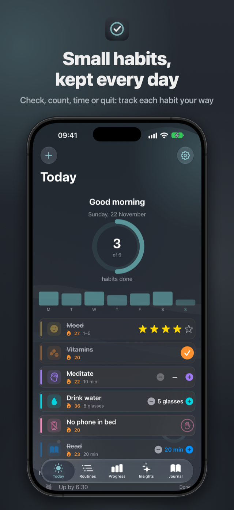
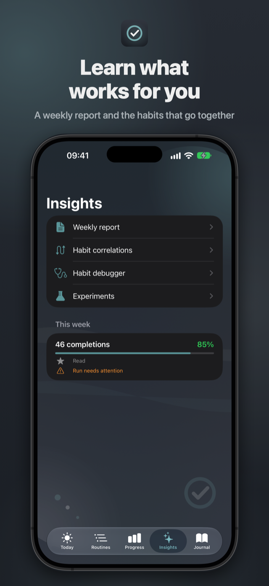
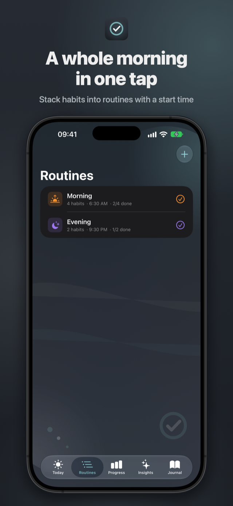

Track it your way
Check it off, count glasses or push-ups, time your reading, rate your mood, keep a habit you're quitting, or log when you got up.
A habit tracker for iPhone and Apple Watch
HabitTracker keeps the habits you want and drops the ones you don't, one day at a time: a tap to check one off, a streak that forgives a bad day, and your progress over the year. Your habits stay on your devices and in your own iCloud.

Features
Check it off, count glasses or push-ups, time your reading, rate your mood, keep a habit you're quitting, or log when you got up.
Every day, workdays, the days you pick, three times a week, twice a month or every few days. A flexible habit waits on Today until its target is met.
A minimum for hard days and a bonus for great ones. Grace days carry a streak over a miss, and pausing for a trip doesn't break it.
A year at a glance, a month calendar to fix past days, current and best streaks, and how fast you get back on track after a miss.
Today's progress and your streaks on the Home Screen, and a reminder for each habit at the time you choose.
Steps, exercise minutes, mindful minutes, sleep and more can check a habit off by themselves. Read only: nothing is written to Health.
A weekly report, the habits that go together, a habit debugger for the ones that slip, and your year in review.
ProStack habits into a morning routine and check it off in one tap; a line a day for your mood, energy and stress.
ProApple Watch
Today's habits come to your Apple Watch from your iPhone. Tap a habit to check it, turn the Digital Crown to count glasses or minutes, and see the day's ring fill. Away from your phone, the watch keeps what you log and hands it over when the phone is back.
Screens


Free and Pro
The free app keeps up to five habits with everything they need. Pro is for more habits and the parts built on top of them.
Unlocks for good, with one purchase.
CHF 15.00
No subscription: pay once, keep Pro on all your devices.
Price in Swiss francs; the App Store shows your country's. A one-time in-app purchase charged to your Apple Account. Terms of Use · Privacy Policy
Questions
Yes. The free app keeps up to 5 habits with every way of tracking, every schedule, reminders, streaks, widgets, Apple Health and the Apple Watch app, with no time limit. Pro is a one-time purchase for unlimited habits, insights, routines, the journal, experiments, life modes and every theme.
No. HabitTracker Pro is bought once and stays unlocked on every device signed in to the same Apple Account. Restore Purchases in Settings brings it back on a new device.
Any iPhone on iOS 18.2 or later, and any Apple Watch on watchOS 11 or later paired with it.
No account, ever. Your habits are kept on your iPhone and, if you're signed in to iCloud, in your private iCloud database, so they're on your other devices too.
With grace days a streak survives a missed day, a minimum keeps a hard day counting, and pausing a habit for a trip leaves the streak as it was. Missed days never disappear from your history: the calendar shows them, and you can fix a day you forgot to log.